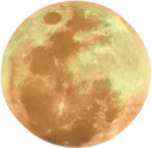

✨ 上元溯源
元宵节，又称上元节、小正月、元夕或灯节，是中国的传统节日之一，距今已有两千多年历史。正月是农历的元月，古人称“夜”为“宵”，所以把一年中第一个月圆之夜称为元宵节。
西汉时期，汉武帝在正月十五祭祀“太一神”；东汉明帝提倡佛教，于上元夜在宫庭、寺院“燃灯表佛”，此后元宵放灯的习俗由宫廷流传到民间。每逢元宵，吃元宵、赏花灯、猜灯谜、舞龙狮，寄托着人们对团圆美满的祈愿。
🏮 元宵·三大雅趣 🏮
吃元宵
北方“滚”元宵，南方“包”汤圆。圆圆的糯米皮裹着香甜的馅，象征团圆美满。芝麻、花生、豆沙……一口软糯，甜在心头。
赏花灯
火树银花合，星桥铁锁开。宫廷民间张灯结彩，走马灯、荷花灯、兔子灯……流光溢彩，祈求平安。
猜灯谜
把谜语贴在花灯上，既启智慧又添趣味。上至天文，下至地理，在欢声笑语中传承文脉。
📜 上元诗词

《青玉案·元夕》
东风夜放花千树，更吹落、星如雨。
宝马雕车香满路。凤箫声动，玉壶光转，一夜鱼龙舞。
—— 辛弃疾 (宋)
《生查子·元夕》
去年元夜时，花市灯如昼。
月上柳梢头，人约黄昏后。
—— 欧阳修 (宋)
🎐 趣味灯谜
- 🌕 白糖嘴，没有头，穿着红袍，走路扭 (谜底: 元宵)
- 🏮 有面没有口，有脚没有手，虽有四只脚，自己不会走 (谜底: 桌子)
- ❄️ 小白花，无人栽，半夜开门纷纷来 (谜底: 雪花)
- 📖 老师不说话，肚里学问大，有字不认识，就去请教它 (谜底: 字典)
👉 灯谜蕴智，佳节同乐
🎎 传承至今 元宵节更是中国春节年俗中最后一个重要节令，一元复始，大地回春。人们吃元宵、赏圆月，团聚祈福，让古老的节日在新时代绽放光彩。🎎